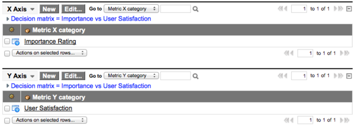

Administering Decision Matrixes
Contents
1 Overview
Assessment results obtained by questionnaires and scripted metrics can be mapped to decision matrixes. Assessment administrators can view and create these dynamically updated graphs, which make it possible to compare assessable records by category. Decision matrixes display data from a trailing twelve month (TTM) period.
2 Viewing Decision Matrixes
To view decision matrixes:
- Navigate to Assessments > Admin > Decision Matrixes.
- Click a Name to open the decision matrix record.
- Under Related Links, click View Matrix to view the decision matrix page.
| |
Note: Vendor managers can view decision matrixes through the Vendor Performance application. For more information, see Using Vendor Decision Matrixes. |
The decision matrix page has these components:
- Options
- Filter: Select the subset of assessable records you want to view. The filter options available vary by metric type, based on the Filter field and Filter condition field settings for each type.
- Scale: Select the scale for the decision matrix. The greater the scale, the larger the decision matrix appears.
- Decision matrix
- X- and Y-axes: Each axis represents one or more metric categories. If multiple categories are used for an axis, their respective weights determine the positioning of the plotted items.
- Plotted items: The labeled points you see on a decision matrix, called plotted items, represent averages of category result data for assessable records. Point to a plotted item label to view a rating summary for that assessable record. Click a plotted item label to view the scorecard for the assessable record.
{kind=link}
{kind=link}
2.1 Plotted Item Rating Summaries
If you point to a plotted item label on a decision matrix, a rating summary appears. The summary displays the assessable record's average ratings for each axis. If an axis represents one metric category, the ratings are calculated averages from results for that category. If an axis represents multiple categories, the ratings are calculated averages from weighted results for all of the categories.
The summary shows:
- Current rating
- Difference between the current rating and the rating from the previous year
- Ratings from each previous year, going back three years.
{kind=link}
3 Creating Decision Matrixes
The name and labels on a decision matrix are closely linked to the categories you choose for the axes. For that reason, first select the metric type and define the X and Y axes before you fill in other fields on the Decision Matrix form.
- Navigate to Assessments > Admin > Decision Matrixes.
- Click New.
- Select the metric Type to plot results for.
- Right-click the form header and select Save.
- The X Axis and Y Axis related lists appear.
- Define which metric categories the axes represent. Each axis can represent a single category or multiple categories. You must specify at least one category per axis in order for the decision matrix to render properly.
- The available categories are limited to those associated to the metric type selected. To avoid confusion, always update the text for the axis and quadrant labels after editing or adding metric categories to an axis.
-
- 
-
- Fill in the remaining fields on the Decision Matrix form (see table) and save the record.
{kind=link}
| |
Note: For color fields, either HTML color names or hexidecimal (hex) values are acceptable. For hex values, the # character is optional. Values are not case-sensitive. For example, all of the following values are valid: LightGray, lightgray, #D3D3D3, d3d3d3. |
{kind=link}
Field Description Name Name of the decision matrix, which appears as the title on the decision matrix page. It is recommended to include the axis categories in the name. For example, if you selected Importance Rating as the X-axis and User Satisfaction as the Y-axis, you might name the matrix Importance vs. User Satisfaction. Type Metric type associated with this decision matrix. Only results for assessable records of the selected metric type are plotted on the decision matrix. Default Determines whether or not this is the default decision matrix. The default decision matrix opens when you click View Matrix on a scorecard. Select the check box to set the matrix as the default decision matrix. The system prevents you from creating more than one default decision matrix per metric type. If there is already a default decision matrix for the type and you try to save a different matrix with the check box selected, an error message appears.
Quadrant Design Section Quadrant label color Color of the label text for the quadrants. Each quadrant label displays in the center of the quadrant. You can enter an HTML color name or hex value for this and the other color fields. X-Axis label Label text for the X-axis of the decision matrix. It is recommended to include the metric category name in the label text. For example, for an X-axis category of Importance Rating, the X-axis label is Importance. Plotted item color Color used to display plotted items. For more information, see Viewing Decision Matrixes. Top left label Label text for the top left quadrant. For an X-axis labeled Importance and Y-axis labeled Support, you might label the top left quadrant Low importance, high support. Top left color Fill color for the top left quadrant. Bottom left label Label text for the bottom left quadrant. Bottom left color Fill color for the bottom left quadrant. Y-Axis label Label text for the Y-axis of the decision matrix. Highlight item color Color of highlighted plotted items. When you view a decision matrix from an assessable record's scorecard, the assessable record plotted item appears in the highlight color. Specify a highlight color that is different than the Plotted item color. Top right label Label text for the top right quadrant. Top right color Fill color for the top right quadrant. Bottom right label Label text for the bottom right quadrant. Bottom right color Fill color for the bottom right quadrant. Related Lists X Axis Lists categories that define the X-axis of the decision matrix. Y Axis Lists categories that define the Y-axis of the decision matrix.
{kind=link}